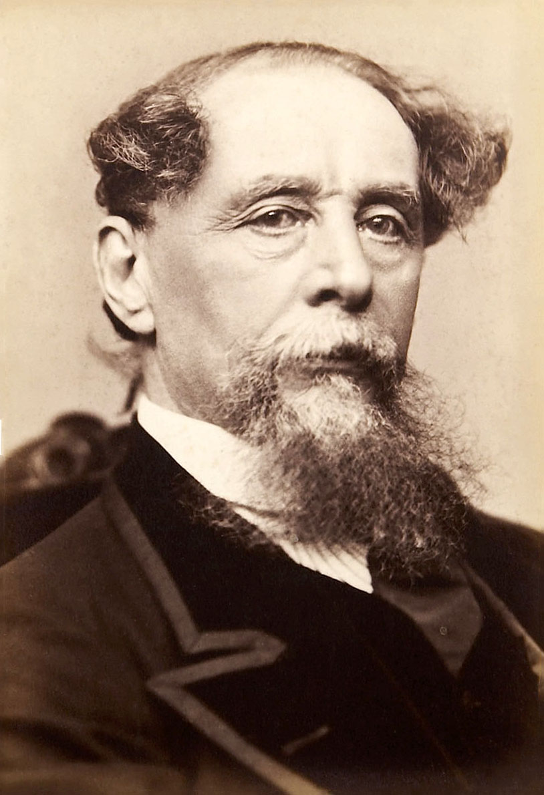

Charles Dickens
Suurkaupungin elämää, huumoria ja myötätuntoa.
Charles Dickensin maailmassa kadut ovat täynnä ääniä ja ihmiskohtaloita. Omaperäiset henkilöhahmot ja vahva huumori tekevät köyhyydestä, vallasta ja välittämisestä eläviä kysymyksiä.
Etsi teokset kirjastostaElämä ja teokset
Charles Dickens syntyi vuonna 1812 Portsmouthissa. Hänen lapsuuteensa kuului perheen talousvaikeuksia ja työskentelyä kenkämustetehtaassa. Myöhemmin hän työskenteli toimittajana ja nousi yhdeksi viktoriaanisen ajan tunnetuimmista kirjailijoista.
Dickensin romaaneja julkaistiin usein jatkokertomuksina. Oliver Twist, David Copperfield ja Suuria odotuksia kuvaavat kasvamista maailmassa, jossa turva ja mahdollisuudet jakautuvat epätasaisesti. Vuonna 1843 ilmestynyt Saiturin joulu tiivistää hänen kiinnostuksensa siihen, voiko ihminen muuttua. Dickens kuoli vuonna 1870.
Tyyli ja teemat
Dickens yhdistää lämpöä, liioittelua, synkkiä näkymiä ja koomisia yksityiskohtia. Henkilön puhetapa tai ele voi tehdä hänet heti tunnistettavaksi. Yksittäisen ihmisen vaikeudet avaavat näkymän laajempaan yhteiskuntaan, mutta tarinan voima syntyy konkreettisista kohtaamisista ja siitä, mitä ihmiset tekevät toisilleen.
Myötätunto · Huumori · Yhteiskunnallinen oikeudenmukaisuus
Aloita tästä
Saiturin joulu
Jouluyön vieraat pakottavat Ebenezer Scroogen katsomaan elämäänsä uudelleen. Lyhyt kertomus on hyvä ensiaskel Dickensin huumoriin ja myötätuntoon.
Huomaa, miten Scroogen tapa nähdä muut ihmiset muuttuu. Millaiset yksityiskohdat tekevät menneisyyden ja nykyhetken eroista näkyviä?